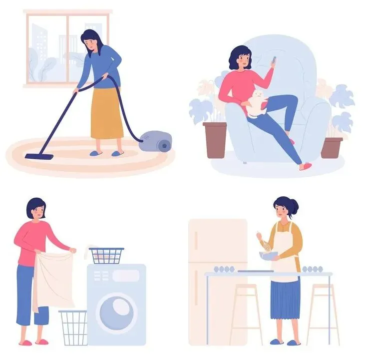
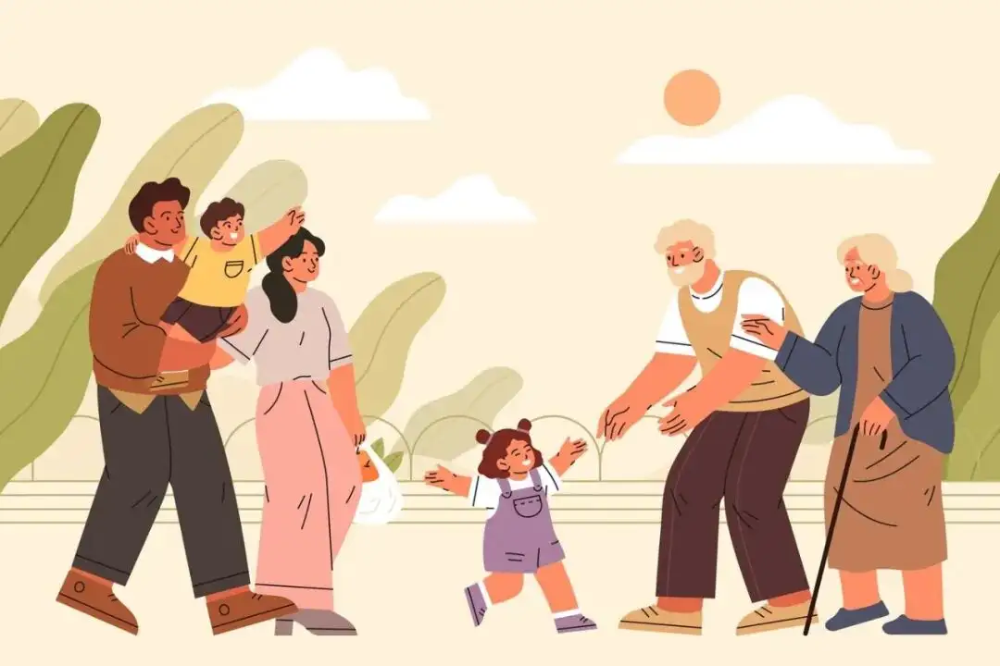

在人生下半场，
我来美国做护工
五年前，50岁的Wendy从中国来到美国，开始了护工职业生涯，也顺便陪伴自己在美国读大学的孩子。
“我们母子二人也彼此有个照应。”Wendy说，“我也可以通过自己的劳动获得一份收入。”
Wendy现在在一个华人家里工作，每日的主要工作是照顾行动不便，生活困难的老人。每周，Wendy需要在雇主家工作4天，工作内容事无巨细：7:30为雇主准备早饭，8点至11点做拖地、吸尘以及其他的清洁工作，还要为雇主准备午饭和晚饭。晚饭后，Wendy还要等待雇主洗漱完毕后，清理卫生间，直至8点，才结束一天的工作。
在周一到周四的工作时间里，为了照顾独居的雇主，Wendy需要住在雇主家里，“上下班的界限也因此变得十分模糊。”Wendy说，“私人生活也随时有可能被工作占满。”这远远超过了法定的每天工作7-8小时的规定。
周四是Wendy最忙碌的一天，她完全没有时间午休。“我需要在周四把接下来三天的午饭、晚饭都准备好。”

相比在医疗机构工作的护工，像Wendy这样直接在雇主家里工作的护工不需要冗繁和严格的招聘流程，不需要从事一些基础的、重复性高的辅助性医疗服务工作，不过，她们的工作却多了许多软性的要求，例如为雇主洗衣做饭、采买购物等，类似于全职的居家保姆。
然而，雇主们多是年迈的老人，护工全方位的照料也未必意味着会有额外奖金。Wendy坦言：“这是一个长期性的、耗费精力和体力的工作。”
美国一政府部门医院的主管护士邓女士说：“对于新移民而言，护工是一个比较容易就业的工种。”她提到，在美国，尽管护士是一个非常吸引人的职业，收入十分可观，甚至可能达到中产阶级的水平，然而，护工与护士相比，虽然在职业名称上仅一字之差，但在收入待遇等各方面都相差甚远。
相比起来，护工没有教育背景的要求，没有年龄限制。对于许多40至60岁的新移民来说，这是一个相对容易获得、且可以养家糊口的职业。新移民们可以选择通过护工执照的考试后就业，也可以直接上岗，在护士的指导下进行一些比较基础、重复性较高的护理工作。
但对Wendy来说，工作的可及性、职业发展和养家糊口可能只是部分考虑因素。作为受雇于雇主家，工作时长超乎于平均值的护工，Wendy的人生选择再次回归到了她对“家”的信仰。

尽管很累，“但我还是愿意这样照顾老人。我的母亲60岁的时候就去世了，这对我来说是心中永远的伤痛。”子欲养而亲不待，Wendy一直认为自己没有尽到做子女的责任，这也让她开始格外关注那些孤单的、病弱的、常常被年轻人忽略的老年人。
“老人到了这个岁数，经历了无数历练，他们的言语或者心胸会变得更加的豁达。和他们在一起，我会获得许多人生的智慧。”Wendy感慨道：“这是这份辛苦的工作带给我的最大的收获了。”
坚韧之花，学无止境
不需要教育或职业背景就意味着很容易吗？
对此，Wendy特别强调的一点是：护工这个职业虽然看似要求不高，实则对从业人员的综合素养要求非常高。首先，对护工的体力要求就是一大挑战。如Wendy所描述，一般家庭护工的工作时长和强度远远高于平均值，而且由于是服务行业，“护工需要尽量满足雇主的一切需求”。
虽说任何年龄或背景的人都可以从事护工工作，但Wendy切身体会到年龄渐大的社工只会渐渐被雇主和市场淘汰。这对已过不惑之年的Wendy来说，也是一个不可忽视的挑战。
但Wendy不认为淘汰是一种必然的结果。她呼吁新移民护工，特别是年龄较大的女性，应该把自己的年龄和阅历优势利用起来：“亚裔女性要多方位提高生活技能和服务技能，提前规划自己的职业生涯。”
另一巨大挑战则是护工与雇主在语言和文化上的沟通问题。据邓女士表示，她身边的护工还是少数族裔占比较多。“80%是菲律宾，还有一部分是墨西哥裔和非裔。”
因为护工直接对接雇主，需要和雇主高频沟通，新移民护工们常常需要花大量时间学习英语以及美国文化。与此同时，雇主可能因为自己是“出钱”的一方，会提出五花八门的要求，认为护工无论如何都应该满足他们想法。
在五年的护工经历中，Wendy总有一种感觉：雇主们看向她的眼神中总是带着“不平等”。这种无措感在初来乍到，对美国的语言和文化特别不熟悉的时候尤为明显。因此，新移民护工们常常容易产生被社会孤立的感觉，并由此承受着巨大的心理压力。
不过，Wendy认为，习得美国文化、融入美国社会也都是在提升自己的技能点和竞争力。Wendy有一种淡然且乐观上进的心态，例如通过参加华人教会活动来学习英语和当地教会文化。对她来说，华人教会像是一个过渡带，可以把初来乍到的她带入美国社会，并且能获得华人教会里兄弟姐妹的帮助和支持。
找到“家”的归属感
Wendy就像一朵坚韧之花，在异国他乡绽放。
她的职业选择不仅是为了养家糊口，更是一份对于家庭和母爱的回馈。在护工这个看似简单的职业中，她以坚定的信念和积极的态度努力成长、适应并融入美国社会。即便面对工作上的压力和文化差异，Wendy始终保持乐观向前的心态，通过不断学习和勤奋工作，逐渐在异国找到了“家”的归属感。
同时，Wendy通过参与社区建设，以护工的身份为美国的独居老人以及其他的新移民社工提供支持。
采访｜钱思宇
撰文｜尚思宇
审校｜秦科
排版、封面｜罗菲
图片 | Freepik